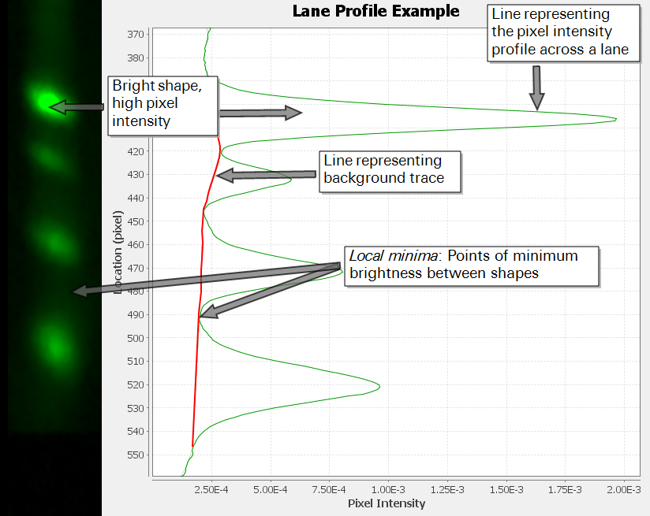
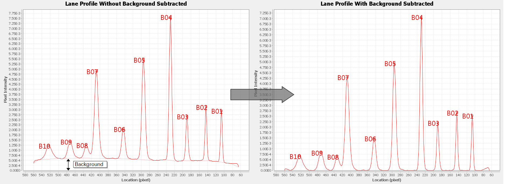
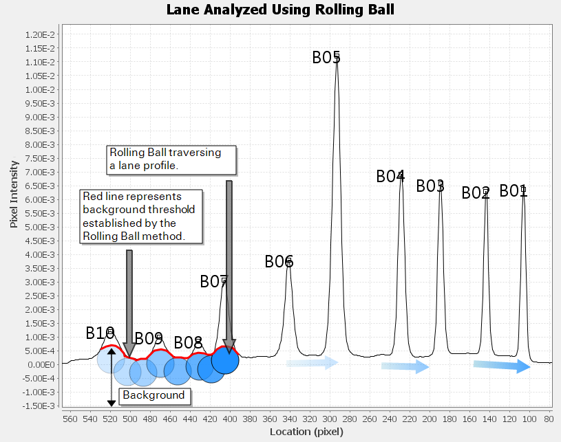
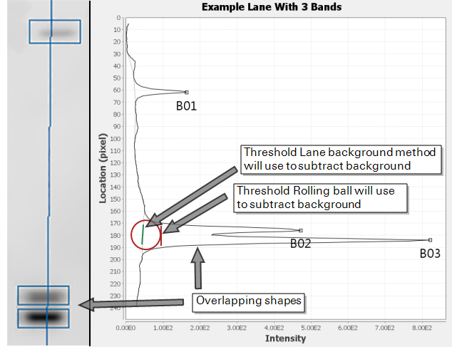

Lane Method vs. Rolling Ball from ImageJ
The Image Studio Lane background subtraction method and ImageJ Rolling ball method use very different algorithms to subtract background from a lane. Rolling ball can also be used to subtract background from an entire image, although this is discouraged.*
*Gassman, M, B Grenacher, B Rohde, and J Vogel. Electrophoresis 30:1845-55 (2009).
http://www.ncbi.nlm.nih.gov/pubmed/19517440
To begin the Image Studio Lane background subtraction algorithm, the average pixel intensity of each row of pixels in a lane is calculated to establish a "lane profile". The lane profile is used to find areas of minimum pixel intensity between shapes, called "local minima". The image below shows a lane with its corresponding lane profile.

To subtract background, a linear connection is drawn between consecutive local minima and background noise that falls beneath the lines is subtracted.
The Lane background method takes advantage of the known locations of shapes within a lane and selectively connects minima in the profile to account for variations in shape size, shape spacing, and image resolution. The image below shows a lane profile before and after Lane was used to subtract background.

To understand Rolling ball, imagine an image of a Western blot as a 3-dimensional histogram of pixel intensity

Rolling ball identifies background in an image by traversing a ball along the bottom surface of the pixel intensity histogram. The highest point where the ball can fit underneath the surface is considered the threshold for background subtraction at that point

When Rolling ball is applied to a lane, a background curve is determined by traversing the ball beneath a lane profile representing the average pixel intensity across each row of pixels in a lane

Whether Rolling ball is applied to an entire image or a lane, an appropriate radius must be chosen for accurate results. The correct radius is dependent on many factors: image resolution, shape width, shape separation, and shape overlap. When choosing a radius, a quick rule of thumb is to make the radius the same size as the largest feature in the image or lane that is not part of the background.
However, many factors that affect Rolling ball's accuracy are likely to vary throughout an image, so applying Rolling ball to an entire image is discouraged. Even within a lane, shapes that vary widely in size and shapes that overlap can decrease Rolling ball's accuracy.
When deciding if Rolling ball is appropriate for a particular image, consider the description of Rolling ball from the ImageJ documentation:
"Removes smooth continuous backgrounds from gels and other images"
- ImageJ User Guide | 29.14 Subtract Background… (acc. 10/28/14)
If the background does not appear smooth and continuous, another approach may be necessary.
The two primary differences between Rolling ball and Image Studio Lane background are:
- Rolling ball requires a user to choose a radius for a ball that will be applied to individual lanes or to the entire image. Lane does not require user input to accurately subtract background.
- Rolling ball can be applied to an entire image or a lane. Lane background is applied only to a lane.
NOTE: When Rolling ball is used to subtract background from an entire image, the image will visibly change. Background subtraction does not change the image's appearance in Image Studio Software, but background correction is still occurring (as long as None is not chosen).
Rolling ball can be effective for subtracting background from images that have smooth and continuous backgrounds. However, it is difficult to accurately subtract background using Rolling ball for lanes and images that have closely-spaced shapes or shapes with widely variable sizes.
For example,
By contrast, the Lane background method will trace a background threshold beneath the double peaks. Lane background does not use the local minimum between shapes B02 and B03 to create the background trace, because the algorithm avoids creating steep lines that would cut into a signal peak.
